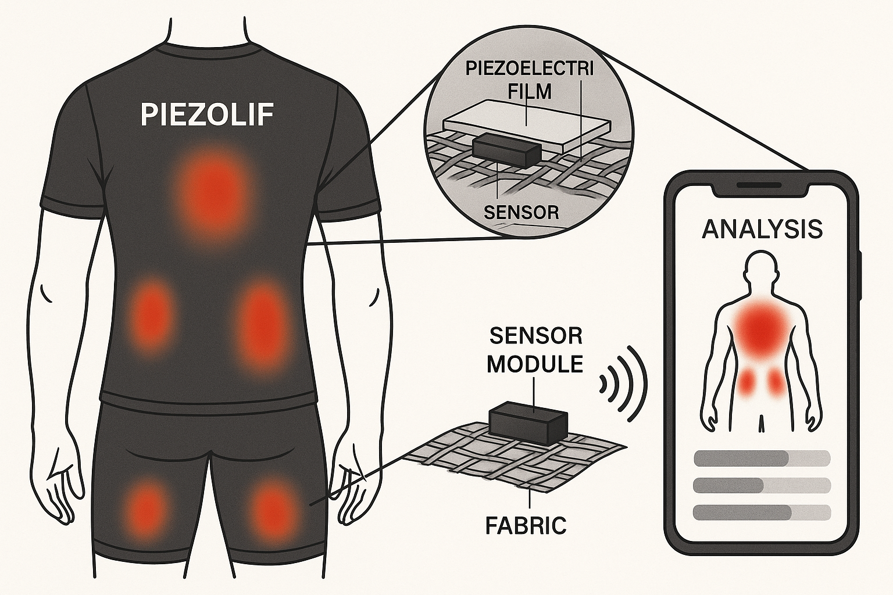

PiezoEnerji Kumaşı
Hareketle elektrik üreten, ultra ince ve sensörlü piezo kumaş.
Enerjisini doğrudan kullanıcının hareketinden alan, biyobozunur prototip.
Daha Fazla
Akıllı Sensörlü Tekstil
Sıcaklık, nem ve hareketi algılayan entegre sensör teknolojileri.
Giyilebilir sağlığı yeni nesle taşıyoruz.
Yeşil Gelecek Projeleri
Biyobozunur enerji üreticilerimizle çevre dostu çözümler, sürdürülebilir inovasyon.